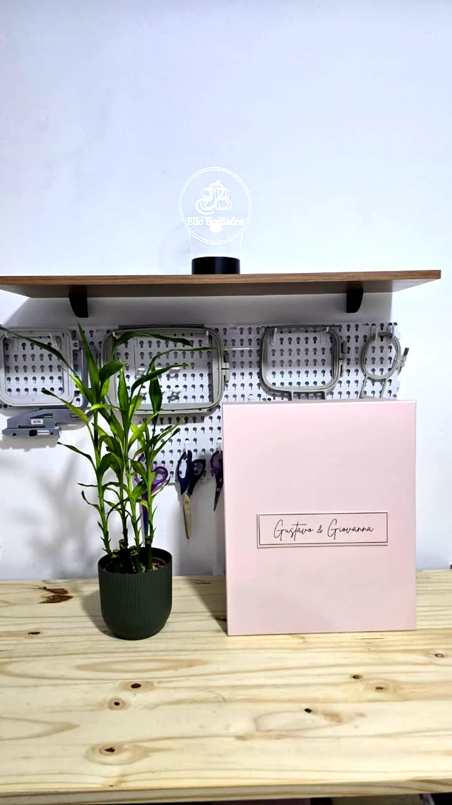

Uma boa conversa começa com a sua ideia.
Escolha os produtos, monte seu orçamento ou converse diretamente com a Ateliello pelo WhatsApp. A produção e o recebimento são combinados conforme a proposta aprovada.
Conversar no WhatsApp ↗
De São Paulo para as suas histórias.
A Ateliello atende online e organiza envios conforme o destino e a disponibilidade. Retirada pode ser combinada previamente, apenas para pedidos confirmados, nas regiões indicadas no atendimento.
Mapa ilustrativo, não representa rotas ou distâncias. Os detalhes logísticos de retirada são fornecidos após confirmação e agendamento.
Receba do seu jeito.
Atendimento: online pelo site e pelo WhatsApp (11) 5444-1399.
Envios: condições e frete informados no orçamento.
Retirada: alternativa sob agendamento e disponibilidade, para pedidos já confirmados.
Referências das regiões de retirada
São Paulo: região da Galeria Espiral, Av. Brigadeiro Luís Antônio, Bela Vista.
Osasco: região da Rua Formosa, 57.
Os locais e horários disponíveis são confirmados individualmente pelo atendimento.
Identificação: Ateliello Uniformes e Bordados · CNPJ 64.228.277/0001-59.
Preparar meu pedido ↗